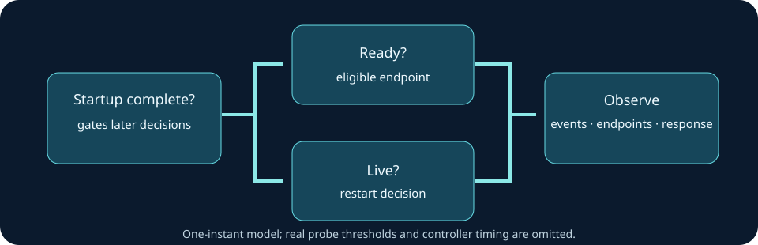

CONTAINERS / OPERATIONS
Kubernetes Operations Lab
A reproducible local-cluster learning lab for readiness, pod replacement, scaling, rolling updates, and rollback exercises.
PROJECT / SOURCE & INSTRUCTIONS
Kubernetes Operations Lab
A reproducible local-cluster learning lab for readiness, pod replacement, scaling, rolling updates, and rollback exercises.
The source and runbooks live on GitHub. Cluster exercises require a separate authorized Docker/kind environment; this OSU site does not run a Kubernetes cluster.
CASE STUDY / CLUSTER OPERATIONS
Separate traffic readiness from restart policy
A container can be running but unable to serve a request. Startup, readiness and liveness answer different questions, so an outage investigation needs both application responses and cluster observations. The linked standalone repository contains local-cluster exercises and runbooks; the on-site companion is a bounded decision model.

Failure analysis
- Establish the symptom: record an application request and response, timestamp, pod state and recent rollout history.
- Inspect the decision: determine whether startup completed, readiness failed, or liveness failed. In the model, started and live but unready means no endpoint eligibility and no requested restart.
- Trace the dependency: correlate probe results with events, endpoints and application dependencies before changing probe thresholds.
- Recover and verify: fix or roll back the failed change, then verify application response and endpoint membership after recovery.
Run the local model
The checked-in Python companion accepts three booleans and returns endpoint and restart decisions. From a clone of this portfolio, install the listed Python dependencies in an isolated environment, then:
cd project-sources/engineering-studies
python3 -m pip install -r requirements.txt
python3 -m unittest discover -p 'test_*.py'Inspect the notebook, the model, and the inspection-only manifest. The manifest contains a placeholder image at example.invalid; replace it with an owned application exposing the stated endpoints before trying it in a disposable cluster. The manifest is not a deployable demo as shipped.
Evidence boundary and next experiment
The unit fixture evaluates one instant. It omits failure thresholds, delays, backoff, network policy and controller timing. No cluster rollout or recovery was performed for this content page. For a real exercise, follow the standalone repository's runbook in an authorized local environment, retain pod events and endpoint snapshots, and compare them with application responses before and after a controlled outage.